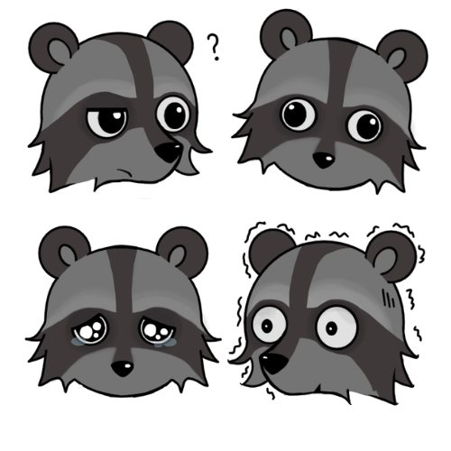
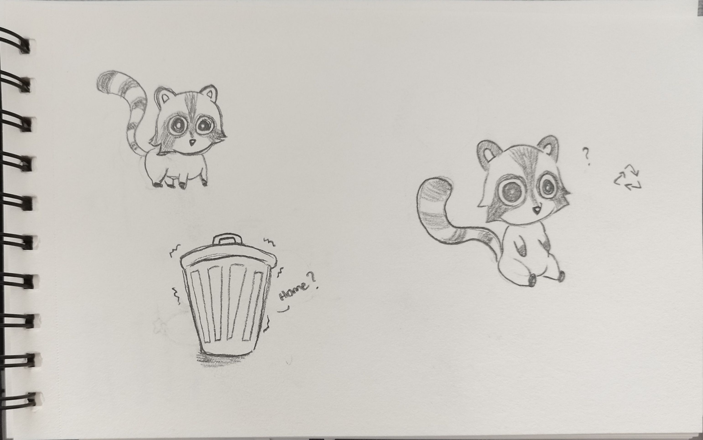
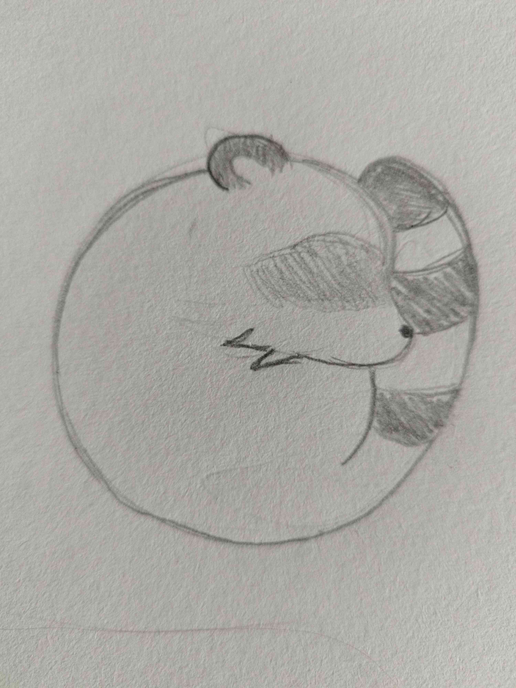
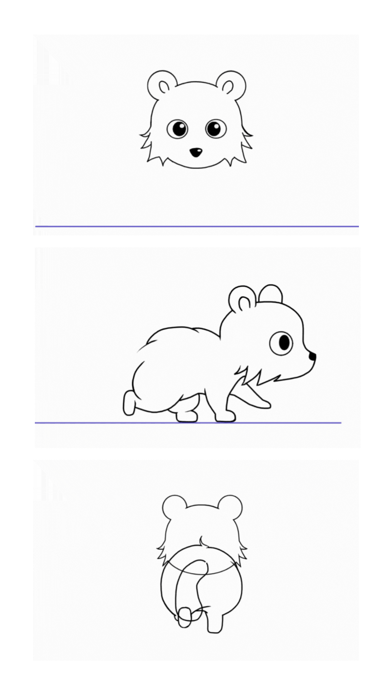
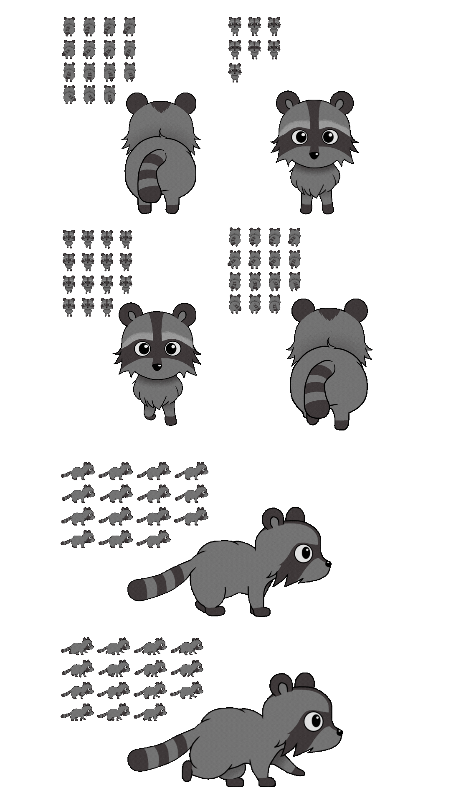
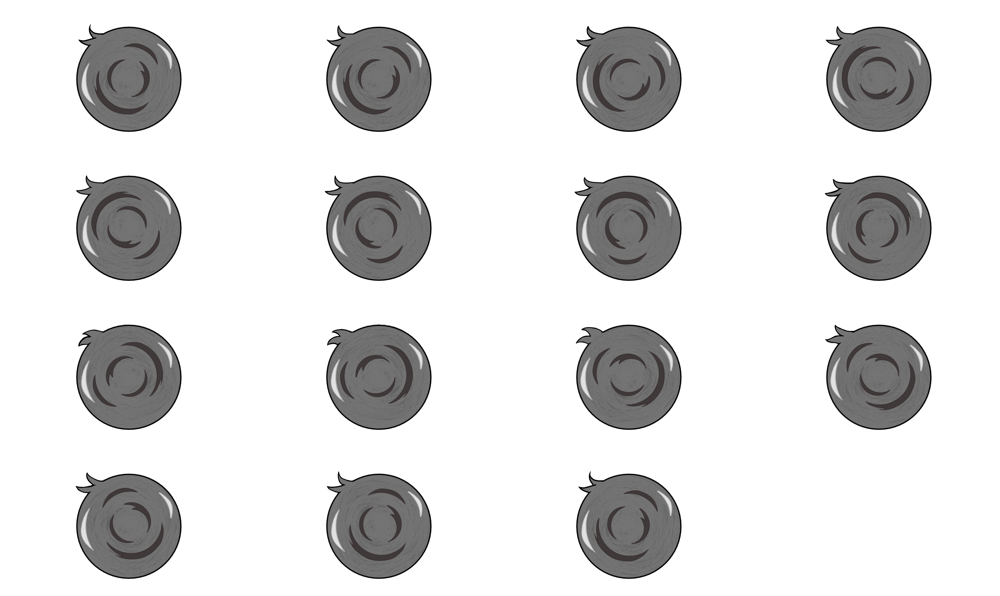
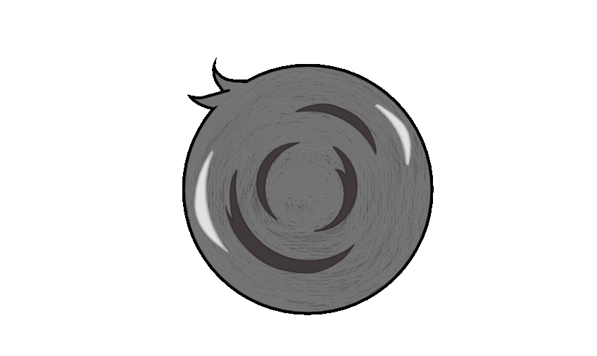

Character
The Sparkler

The character is based on one of the teams members RP-character. Sparkler is a silly little mischievous raccoon that causes chaos.
In the game, player gets to play as Sparkler and tries to escape the mansion.
There are not many instructions, which plays both on the difficulty level, and characters personality.






Early animations
The character has sets of animations; idle and movement.
in this time the game has these animations and a roll for another game mechanic.